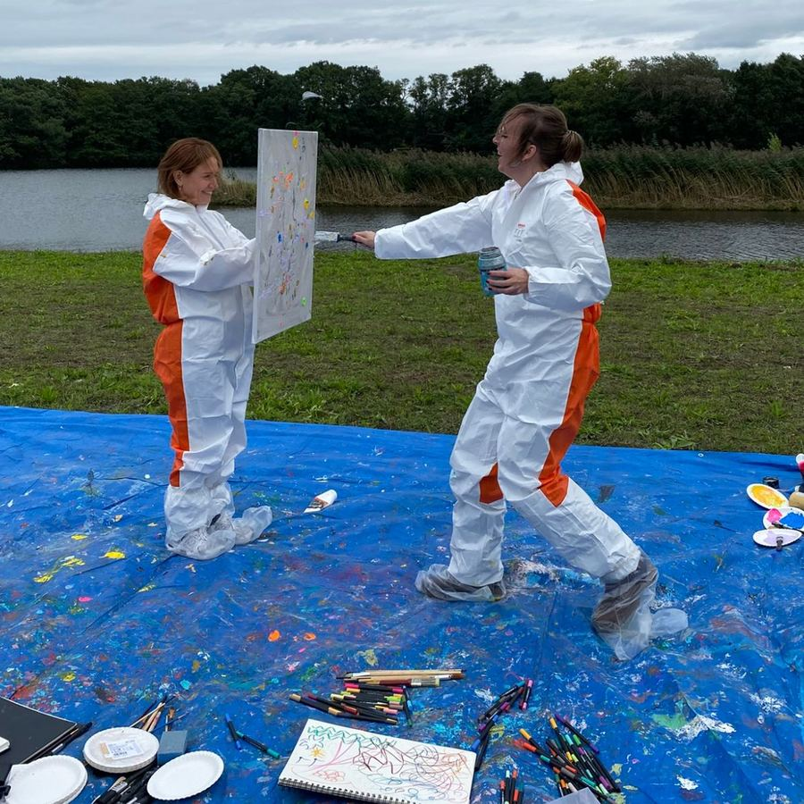
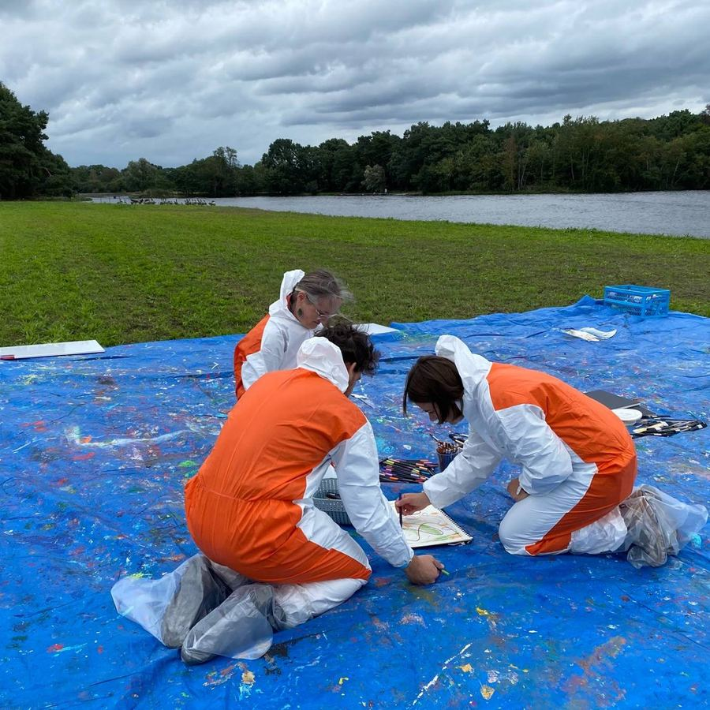
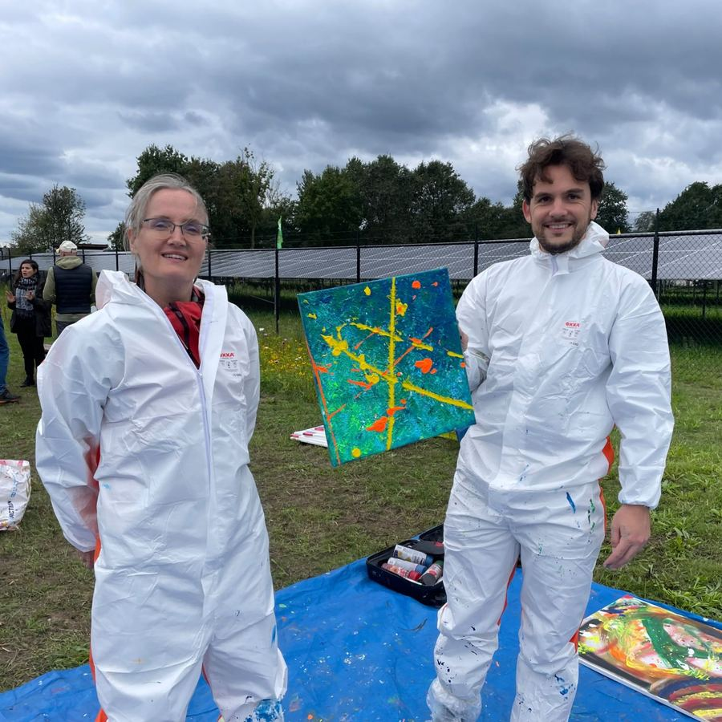

Over deze Workshop
Wat is Verf Therapie?
Bij Verf Therapie draait het niet om een perfect eindresultaat, maar om de beweging, het plezier van het maken en even helemaal loslaten. U gooit, spettert en spuit de verf op het doek en ziet wat er ontstaat. Even niet nadenken, alleen maar kleur, gevoel en vrijheid. Zo laat u de stress van u af glijden.
U bepaalt zelf hoe u te werk gaat. Wilt u er flink op los gaan? Smijt dan gerust met verf en verfballonnen om al uw frustraties eruit te laten. Werkt u liever rustig en geconcentreerd aan een eigen ontwerp? Dat mag net zo goed. Onze ervaren makers helpen u op weg en geven tips, maar laten u vooral vrij.
Alles Mag
Tijdens de workshop werkt u onder andere met:
- Verf om mee te gooien en te spetteren
 Spuitbussen in vrolijke kleuren
Spuitbussen in vrolijke kleuren Stencils voor patronen en vormen
Stencils voor patronen en vormen- Penselen en kwasten voor wie rustig wil schilderen



Wij houden alles schoon
Kliederen mag, en daar zijn wij op voorbereid. Wij bedekken de vloer en de omgeving volledig met zeil, zodat uw tuin of grote kamer schoon blijft. Ook aan uzelf hebben wij gedacht: wij nemen verfpakken mee, zodat uw kleding schoon blijft. Na afloop ruimen wij alles weer netjes op.
Creatieve Vrijheid
Geen ervaring nodig. Er is geen goed of fout: alles wat u maakt, is goed.
Lekker Loslaten
Gooi, spuit en spetter de stress van u af, of werk juist rustig en ontspannen.
 Mee Naar Huis
Mee Naar Huis
U gaat naar huis met uw eigen kleurrijke kunstwerk, uniek en vol energie.
 Ook voor Kinderen
Ook voor Kinderen
Ideaal voor een kinderfeestje: kinderen mogen hier eindelijk lekker kliederen.
Perfect voor Kinderfeestjes
Kinderen vinden deze workshop geweldig. Waar het thuis meestal netjes moet, mogen ze hier eindelijk naar hartenlust kliederen, spetteren en spuiten. Iedereen maakt een eigen kunstwerk om trots mee naar huis te nemen. Zo wordt het een verjaardag om nooit te vergeten, en u hoeft zich geen zorgen te maken over de rommel.
Wat Maakt Deze Workshop Bijzonder?
In deze workshop draait het om vrijheid. U hoeft niets te kunnen en niets te bereiken: u laat zich gewoon meeslepen door kleur en beweging. Dat werkt heerlijk ontspannend en levert verrassend mooie kunstwerken op. Of u nu op zoek bent naar een origineel teamuitje, een uitbundig vrijgezellenfeest of een kinderfeestje: deze workshop biedt alles.
 Praktische Informatie
Praktische Informatie
De workshop Verf Therapie in het kort:
- Duur: 2 uur
- Professionele begeleiding
- Inclusief materialen (voor ieder wat wils)
- Voor beginners en gevorderden
- De kunstenaar maakt sfeerfoto's en een groepsfoto na afloop
Verfpakken zijn inbegrepen, dus u hoeft alleen uw creativiteit mee te brengen! De workshop kan voor groepen worden georganiseerd en wij geven hem zowel op locatie als in ons eigen atelier in de Betuwe. Voor meer informatie over data, prijzen en het reserveren van uw plaats, neem contact met ons op. Wij beantwoorden graag al uw vragen!
Klaar om te kliederen?
Reserveer nu uw plek en laat de verf vliegen. Wij helpen u graag met alle informatie over beschikbare data en prijzen.